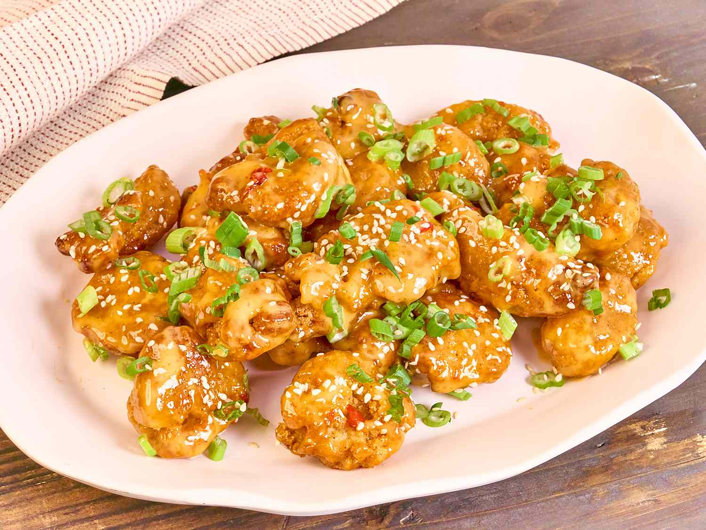

Bang Bang Chicken Nuggets
Home

Delicious Chicken Bites
These bang bang chicken bites are spicy,
crispy little chicken nuggets, air fried or baked, then tossed in a quick chili sauce.
Enjoy this quick and easy 3 step recipe!
Bang Bang Chicken Bites
- 24 ounces frozen crispy chicken nuggets
- 1/2 cup mayonnaise
- 3 tablespoons sweet chili sauce
- 1 tablespoon Sriracha hot sauce, plus more if desired
- 1/4 cup sliced green onions
How to Make Bang Bang Chicken Bites
- Preheat an air fryer
- Add nuggets in a single layer to the air fryer basket, and fry until hot and crisp, about 10 minutes, shaking the basket halfway through cooking time. You may need to work in batches. (Alternately, preheat the oven to 400 degrees F. Place nuggets in a single layer on a baking sheet, and bake in the preheated oven until golden, about 12 minutes.)
- Meanwhile, stir mayonnaise, chili sauce, and hot sauce together in a large bowl until well blended. Toss hot chicken nuggets in sauce until well coated. Top with green onions before serving.